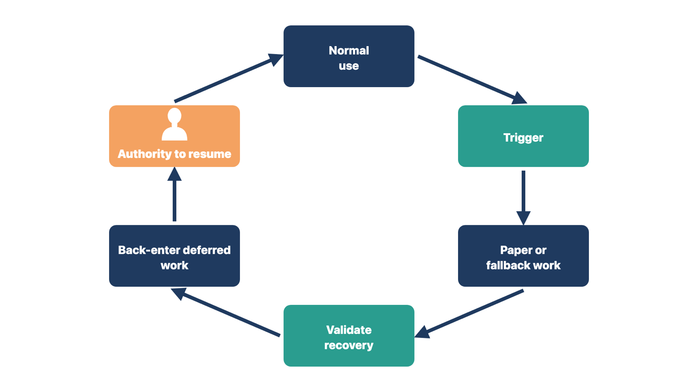
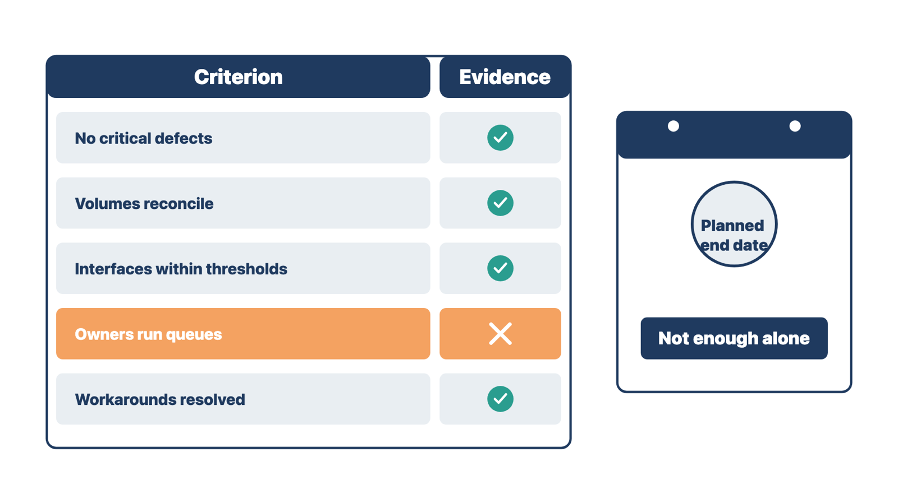
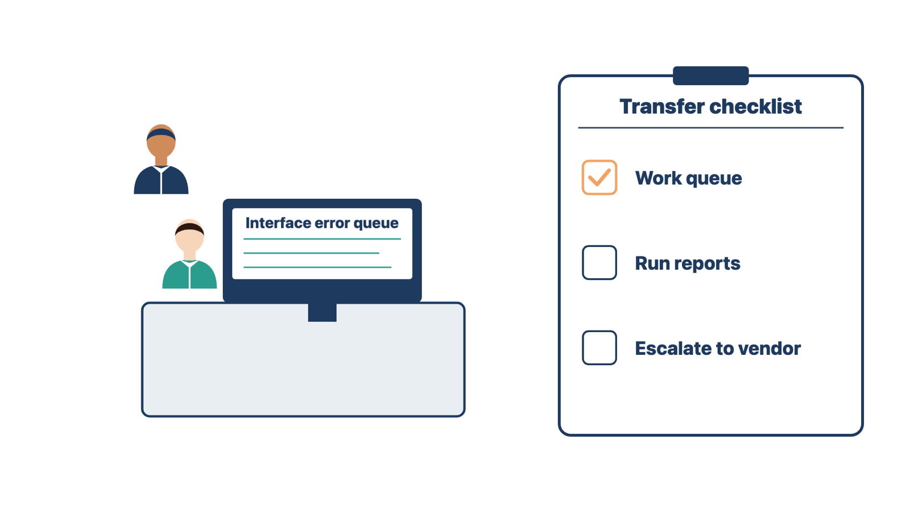

Module 12, Lesson 2: Use downtime or pause when a trigger occurs
Use downtime or
pause when a trigger occurs
Sometimes the safe choice is to stop using the system. Staying on an
unsafe workflow to protect the schedule is not a successful go-live.
Downtime is a period when staff cannot use the
system and switch to approved paper or backup methods. A
pause stops one workflow or location while the rest
keep running. The team should already know the conditions for downtime,
partial pause, rollback, or stopping a workflow. If a condition
occurs:
protect people, information, funds, deadlines, and records;
invoke the approved procedure;
tell affected users clearly;
record work done outside the system;
diagnose and correct through authorized channels;
validate recovery;
reconcile deferred work;
get authority to resume.

Figure 12.6. Notice that staff return to the system only after recovery is validated and a named person authorizes it.
Rule: Staff return to the system only after recovery
is validated and the named person authorizes it.
At Cedar Point, Lakeshore loses its network for two hours. When the
vendor says the system is back, you validate recovery, plan paper
back-entry, and ask the practice administrator to approve resuming. At
an imaging center, the scheduling interface fails. The operations
director resumes only after a test booking flows end to end. In both
cases, the vendor's word alone did not restart the work.
Check yourself
What are the last three steps of the downtime procedure?
The vendor says the system is back. Why is that not enough to
resume?
What happens to the paper work done during downtime?
End
stabilization on evidence, not the calendar
If support ends on a fixed date, open problems lose their extra
attention while they still hurt the clinic.
Stabilization is a set period of extra support and
monitoring after go-live. Some teams call it hypercare.
This book uses "stabilization." Exit criteria are the
conditions that must be true before stabilization ends. Set them before
go-live, and end stabilization when they are met, not when a planned
number of days has passed.
Possible exit criteria include:
no unresolved critical defects;
high defects below the approved threshold, with active plans;
key workflow volumes reconcile;
interfaces and automation stay within approved error and aging
limits;
required users show competence or have a remediation plan;
support volume and response time reach the agreed level;
temporary workarounds are removed or formally accepted;
open conversion and cutover items are closed;
operational owners can run queues, reports, monitoring, and
escalation;
documentation and support knowledge are current.

Figure 12.7. Notice that reaching the planned end date alone does not end stabilization; the evidence does.
Review the criteria by workflow and risk. A low ticket count does not
prove that an unmonitored process works.
Rule: Stabilization ends when the exit criteria are
met or formally accepted, not when the planned date arrives.
At Cedar Point, tickets are low on day 10, but nobody has checked the
reminder error list. You keep stabilization open and propose an owner
and date for each gap. At a behavioral health clinic, the planned end
date is two weeks away, but every criterion is already met with
evidence. The team proposes an early exit. In both cases, the evidence
set the end, not the calendar.
Check yourself
List four possible exit criteria.
Why might a clinic end stabilization earlier than planned?
The sponsor wants to end stabilization because tickets are low. What
would you check first?
Follow up on a schedule
Scheduled follow-up catches problems that grow slowly. It also checks
whether the clinic got what it bought.
A common cadence is follow-up at the first day, first week, and first
month. Use it as a starting point. Adjust it to the risk and the
contract.
First operating day. Confirm access, critical
workflow completion, data and interface reconciliation, issue handling,
user communication, and overnight risk.
First week. Review adoption, repeat questions,
workarounds, backlog, correction patterns, role coverage, open defects,
data quality, automation, and support ownership.
First month. Review the purchased outcomes,
workflow measures, remaining scope, deferred improvements, vendor and
support performance, audit evidence, and lessons for future
projects.
The purchased outcome is the result the clinic
bought the system to reach, such as faster referrals. Complex or
high-risk launches may need more frequent or longer follow-up. Smaller
projects may move faster if the evidence supports it.
Rule: The first-month review starts with the
purchased outcome, not with comfort or ticket counts.
At Cedar Point, the clinic bought the system to cut referral
turnaround from ten days to five. The first-month agenda leads with
current referral turnaround. At a podiatry clinic that bought online
scheduling, the first-month review leads with the share of visits booked
online. In both cases, the review asks whether the purchase did what it
was meant to do.
Check yourself
What does the first-week review look at?
Why should the first-month review start with the purchased
outcome?
When might you add more follow-up reviews?
Transfer to operations and
support
The clinic must be able to run the system after you leave. A handoff
on paper fails if the receiver cannot do the work.
Transfer means formally handing ownership to the
clinic's operating staff and support team. Hold a formal transition
meeting. Transfer:
system and workflow ownership;
role and access administration;
monitoring of queues, alerts, measures, reports, interfaces, and
automation;
vendor and internal support contacts;
known limitations and accepted risks;
open defects and enhancement requests;
downtime and recovery procedures;
configuration and template governance;
source archive and retention ownership;
training and onboarding materials;
incident and escalation routes;
review and maintenance cadence.
Also hand the support team a support knowledge pack.
It holds the known issues and workarounds, the configuration record,
open defects, and who to call for each integration.

Figure 12.8. Notice that the system administrator does the task while you watch and mark the checklist.
Ask each operational owner to show you that they can do the
monitoring and support tasks. Record what they showed.
Rule: Ownership transfers when the receiver shows
they can do the task, not when they receive the document.
At Cedar Point, the new system administrator says she read the
monitoring guide. You watch her work the interface error queue and make
a role change, then record the result. At a two-provider clinic, the
help desk lead receives the knowledge pack. He looks up a known
workaround and the right integration contact while you watch. In both
cases, the receiver showed the work.
Check yourself
What goes in the support knowledge pack?
Why is a signed acknowledgment weaker evidence than a
demonstration?
A receiver cannot clear the error queue during the demonstration.
What would you do?
Close the implementation
Closure tells everyone that the project's work is done. If open work
hides in a general queue, nobody owns it, and the clinic finds out
later.
Closure is the formal end of the implementation
scope. Project closure confirms:
approved scope delivered, changed, deferred, or formally
excluded;
acceptance evidence complete;
financial and commercial items sent to the right owners;
project records organized and retained;
temporary access, data, environments, and accounts removed or
transferred;
open issues owned outside the project;
lessons recorded;
client acknowledgement obtained;
future optimization kept separate from implementation
completion.
Rule: At closure, name each piece of unfinished work
and its owner.
At Cedar Point, a deferred change for Spanish portal messages sits in
the general support queue with no owner. You record it as deferred scope
and ask the client project owner to name its owner. At a sleep clinic,
two temporary vendor conversion accounts are still active. You have them
removed and record it. In both cases, nothing is left open without a
name beside it.
Closing the implementation does not mean the clinic has the value it
paid for. Module 13 covers the work after closure: adoption,
optimization, and measuring value against the purchased outcome.
Check yourself
List five things project closure confirms.
Why is a general support queue the wrong place for unfinished
scope?
Why does closure keep future optimization separate from
implementation completion?
Worked example:
deciding when stabilization ends
Cedar Point planned a two-week stabilization period. On day 14,
support volume is low. The sponsor asks whether stabilization can
end.
The specialist pulled the approved exit criteria from the
readiness plan. Output: a list of the criteria agreed before
go-live. Why: criteria set in advance stop anyone from changing the
target under pressure.
The specialist gathered evidence for every criterion, not
only the ticket count. Output: an exit board with "met" or "not
met" and the evidence for each. Tickets were below target (met). Claim
rejections were above the approved threshold (not met). Lakeshore still
used a temporary paper intake workaround (not met). Why: a quiet support
line can hide an unmonitored failure.
The specialist reported that stabilization should stay
open. Output: a status note listing the two unmet criteria.
Why: the sponsor needs facts to decide, and the calendar is not
evidence.
The specialist found owners for each gap. Output:
an action list with owners and dates. The billing lead traced most
rejections to one missing field. The operations owner took the intake
workaround. Why: billing and operations decisions belong to their
owners.
The specialist sent the fix through change control.
Output: a change record. The team built the fix, quality control (QC)
retested it and ran regression tests, and users repeated the affected
workflow. Why: a fix is not proven until users do the real work with
it.
The specialist ran a second exit review. Output: a
signed exit review. Claim rejections were back under the threshold. The
operations owner removed the workaround. Why: stabilization ends when
the evidence meets the criteria, or when the right authority formally
accepts a limitation and names its owner.
Why did the specialist gather evidence for every criterion before
answering the sponsor?
Why did the operations owner, not the specialist, decide about
the intake workaround?
Why did users repeat the workflow after QC had already passed the
fix?